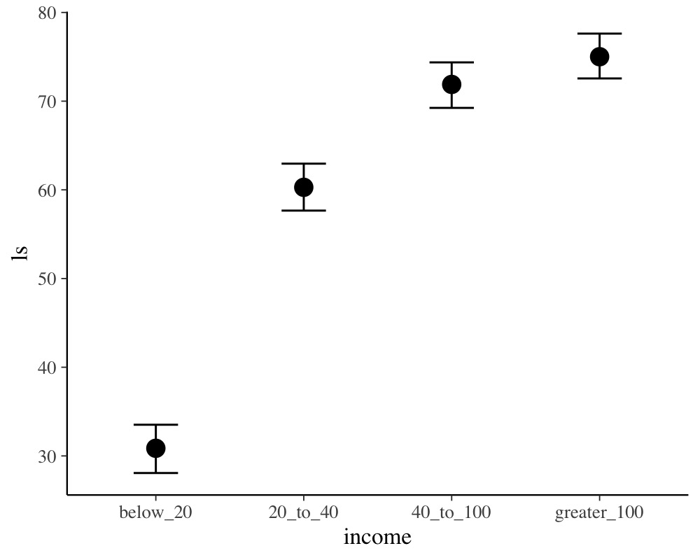

Estimating Monotonic Effects with brms
Paul Bürkner
2020-05-27
Source:vignettes/brms_monotonic.Rmd
brms_monotonic.RmdIntroduction
This vignette is about monotonic effects, a special way of handling discrete predictors that are on an ordinal or higher scale (Bürkner & Charpentier, in review). A predictor, which we want to model as monotonic (i.e., having a monotonically increasing or decreasing relationship with the response), must either be integer valued or an ordered factor. As opposed to a continuous predictor, predictor categories (or integers) are not assumend to be equidistant with respect to their effect on the response variable. Instead, the distance between adjacent predictor categories (or integers) is estimated from the data and may vary across categories. This is realized by parameterizing as follows: One parameter, \(b\), takes care of the direction and size of the effect similar to an ordinary regression parameter, while an additional parameter vector, \(\zeta\), estimates the normalized distances between consecutive predictor categories. For a single monotonic predictor, \(x\), the linear predictor term of observation \(n\) looks as follows:
\[\eta_n = b D \sum_{i = 1}^{x_n} \zeta_i\]
The parameter \(b\) can take on any real value, while \(\zeta\) is a simplex, which means that it satisfies \(\zeta_i \in [0,1]\) and \(\sum_{i = 1}^D \zeta_i = 1\) with \(D\) being the number of elements of \(\zeta\). Equivalently, \(D\) is the number of categories (or highest integer in the data) minus 1, since we start counting categories from zero to simplify the notation.
A Simple Monotonic Model
A main application of monotonic effects are ordinal predictors that can be modeled this way without falsely treating them either as continuous or as unordered categorical predictors. In Psychology, for instance, this kind of data is omnipresent in the form of Likert scale items, which are often treated as being continuous for convenience without ever testing this assumption. As an example, suppose we are interested in the relationship of yearly income (in $) and life satisfaction measured on an arbitrary scale from 0 to 100. Usually, people are not asked for the exact income. Instead, they are asked to rank themselves in one of certain classes, say: ‘below 20k’, ‘between 20k and 40k’, ‘between 40k and 100k’ and ‘above 100k’. We use some simulated data for illustration purposes.
income_options <- c("below_20", "20_to_40", "40_to_100", "greater_100") income <- factor(sample(income_options, 100, TRUE), levels = income_options, ordered = TRUE) mean_ls <- c(30, 60, 70, 75) ls <- mean_ls[income] + rnorm(100, sd = 7) dat <- data.frame(income, ls)
We now proceed with analyzing the data modeling income as a monotonic effect.
The summary methods yield
summary(fit1)
Family: gaussian
Links: mu = identity; sigma = identity
Formula: ls ~ mo(income)
Data: dat (Number of observations: 100)
Samples: 4 chains, each with iter = 2000; warmup = 1000; thin = 1;
total post-warmup samples = 4000
Population-Level Effects:
Estimate Est.Error l-95% CI u-95% CI Rhat Bulk_ESS Tail_ESS
Intercept 32.73 1.44 30.00 35.49 1.00 3004 2637
moincome 14.57 0.73 13.14 15.99 1.00 2538 2366
Simplex Parameters:
Estimate Est.Error l-95% CI u-95% CI Rhat Bulk_ESS Tail_ESS
moincome1[1] 0.63 0.05 0.54 0.72 1.00 3664 2478
moincome1[2] 0.25 0.05 0.15 0.34 1.00 3415 2676
moincome1[3] 0.13 0.04 0.03 0.21 1.00 2706 1311
Family Specific Parameters:
Estimate Est.Error l-95% CI u-95% CI Rhat Bulk_ESS Tail_ESS
sigma 7.54 0.55 6.55 8.66 1.00 3376 2415
Samples were drawn using sampling(NUTS). For each parameter, Bulk_ESS
and Tail_ESS are effective sample size measures, and Rhat is the potential
scale reduction factor on split chains (at convergence, Rhat = 1).plot(fit1, pars = "simo")

plot(conditional_effects(fit1))

The distributions of the simplex parameter of income, as shown in the plot method, demonstrate that the largest difference (about 70% of the difference between minimum and maximum category) is between the first two categories.
Now, let’s compare of monotonic model with two common alternative models. (a) Assume income to be continuous:
dat$income_num <- as.numeric(dat$income) fit2 <- brm(ls ~ income_num, data = dat)
summary(fit2)
Family: gaussian
Links: mu = identity; sigma = identity
Formula: ls ~ income_num
Data: dat (Number of observations: 100)
Samples: 4 chains, each with iter = 2000; warmup = 1000; thin = 1;
total post-warmup samples = 4000
Population-Level Effects:
Estimate Est.Error l-95% CI u-95% CI Rhat Bulk_ESS Tail_ESS
Intercept 23.19 2.36 18.65 27.81 1.00 3494 2846
income_num 14.80 0.87 13.09 16.51 1.00 3383 2803
Family Specific Parameters:
Estimate Est.Error l-95% CI u-95% CI Rhat Bulk_ESS Tail_ESS
sigma 9.32 0.68 8.12 10.83 1.00 3436 2761
Samples were drawn using sampling(NUTS). For each parameter, Bulk_ESS
and Tail_ESS are effective sample size measures, and Rhat is the potential
scale reduction factor on split chains (at convergence, Rhat = 1).or (b) Assume income to be an unordered factor:
contrasts(dat$income) <- contr.treatment(4) fit3 <- brm(ls ~ income, data = dat)
summary(fit3)
Family: gaussian
Links: mu = identity; sigma = identity
Formula: ls ~ income
Data: dat (Number of observations: 100)
Samples: 4 chains, each with iter = 2000; warmup = 1000; thin = 1;
total post-warmup samples = 4000
Population-Level Effects:
Estimate Est.Error l-95% CI u-95% CI Rhat Bulk_ESS Tail_ESS
Intercept 32.56 1.48 29.64 35.51 1.00 2778 2217
income2 27.51 2.18 23.21 31.83 1.00 2888 2757
income3 38.26 2.02 34.35 42.13 1.00 3241 3211
income4 44.04 2.18 39.66 48.23 1.00 3122 2665
Family Specific Parameters:
Estimate Est.Error l-95% CI u-95% CI Rhat Bulk_ESS Tail_ESS
sigma 7.55 0.56 6.56 8.75 1.00 3826 2761
Samples were drawn using sampling(NUTS). For each parameter, Bulk_ESS
and Tail_ESS are effective sample size measures, and Rhat is the potential
scale reduction factor on split chains (at convergence, Rhat = 1).We can easily compare the fit of the three models using leave-one-out cross-validation.
loo(fit1, fit2, fit3)
Output of model 'fit1':
Computed from 4000 by 100 log-likelihood matrix
Estimate SE
elpd_loo -345.7 6.2
p_loo 4.5 0.6
looic 691.4 12.5
------
Monte Carlo SE of elpd_loo is 0.0.
All Pareto k estimates are good (k < 0.5).
See help('pareto-k-diagnostic') for details.
Output of model 'fit2':
Computed from 4000 by 100 log-likelihood matrix
Estimate SE
elpd_loo -366.0 6.6
p_loo 2.8 0.5
looic 732.0 13.1
------
Monte Carlo SE of elpd_loo is 0.0.
All Pareto k estimates are good (k < 0.5).
See help('pareto-k-diagnostic') for details.
Output of model 'fit3':
Computed from 4000 by 100 log-likelihood matrix
Estimate SE
elpd_loo -345.8 6.2
p_loo 4.6 0.6
looic 691.6 12.5
------
Monte Carlo SE of elpd_loo is 0.0.
All Pareto k estimates are good (k < 0.5).
See help('pareto-k-diagnostic') for details.
Model comparisons:
elpd_diff se_diff
fit1 0.0 0.0
fit3 -0.1 0.1
fit2 -20.3 5.1 The monotonic model fits better than the continuous model, which is not surprising given that the relationship between income and ls is non-linear. The monotonic and the unorderd factor model have almost identical fit in this example, but this may not be the case for other data sets.
Setting Prior Distributions
In the previous monotonic model, we have implicitly assumed that all differences between adjacent categories were a-priori the same, or formulated correctly, had the same prior distribution. In the following, we want to show how to change this assumption. The canonical prior distribution of a simplex parameter is the Dirchlet distribution, a multivariate generalization of the beta distribution. It is non-zero for all valid simplexes (i.e., \(\zeta_i \in [0,1]\) and \(\sum_{i = 1}^D \zeta_i = 1\)) and zero otherwise. The Dirichlet prior has a single parameter \(\alpha\) of the same length as \(\zeta\). The higher \(\alpha_i\) the higher the a-priori probability of higher values of \(\zeta_i\). Suppose that, before looking at the data, we expected that the same amount of additional money matters more for people who generally have less money. This translates into a higher a-priori values of \(\zeta_1\) (difference between ‘below_20’ and ‘20_to_40’) and hence into higher values of \(\alpha_1\). We choose \(\alpha_1 = 2\) and \(\alpha_2 = \alpha_3 = 1\), the latter being the default value of \(\alpha\). To fit the model we write:
prior4 <- prior(dirichlet(c(2, 1, 1)), class = "simo", coef = "moincome1") fit4 <- brm(ls ~ mo(income), data = dat, prior = prior4, sample_prior = TRUE)
The 1 at the end of "moincome1" may appear strange when first working with monotonic effects. However, it is necessary as one monotonic term may be associated with multiple simplex parameters, if interactions of multiple monotonic variables are included in the model.
summary(fit4)
Family: gaussian
Links: mu = identity; sigma = identity
Formula: ls ~ mo(income)
Data: dat (Number of observations: 100)
Samples: 4 chains, each with iter = 2000; warmup = 1000; thin = 1;
total post-warmup samples = 4000
Population-Level Effects:
Estimate Est.Error l-95% CI u-95% CI Rhat Bulk_ESS Tail_ESS
Intercept 32.73 1.48 29.88 35.69 1.00 2419 2326
moincome 14.55 0.73 13.08 16.00 1.00 2455 2331
Simplex Parameters:
Estimate Est.Error l-95% CI u-95% CI Rhat Bulk_ESS Tail_ESS
moincome1[1] 0.63 0.05 0.54 0.72 1.00 3395 2545
moincome1[2] 0.24 0.05 0.15 0.34 1.00 2907 2743
moincome1[3] 0.13 0.04 0.04 0.21 1.00 2885 1672
Family Specific Parameters:
Estimate Est.Error l-95% CI u-95% CI Rhat Bulk_ESS Tail_ESS
sigma 7.54 0.54 6.58 8.69 1.00 3667 2954
Samples were drawn using sampling(NUTS). For each parameter, Bulk_ESS
and Tail_ESS are effective sample size measures, and Rhat is the potential
scale reduction factor on split chains (at convergence, Rhat = 1).We have used sample_prior = TRUE to also obtain samples from the prior distribution of simo_moincome1 so that we can visualized it.
plot(fit4, pars = "prior_simo", N = 3)

As is visible in the plots, simo_moincome1[1] was a-priori on average twice as high as simo_moincome1[2] and simo_moincome1[3] as a result of setting \(\alpha_1\) to 2.
Modeling interactions of monotonic variables
Suppose, we have additionally asked participants for their age.
dat$age <- rnorm(100, mean = 40, sd = 10)
We are not only interested in the main effect of age but also in the interaction of income and age. Interactions with monotonic variables can be specified in the usual way using the * operator:
summary(fit5)
Family: gaussian
Links: mu = identity; sigma = identity
Formula: ls ~ mo(income) * age
Data: dat (Number of observations: 100)
Samples: 4 chains, each with iter = 2000; warmup = 1000; thin = 1;
total post-warmup samples = 4000
Population-Level Effects:
Estimate Est.Error l-95% CI u-95% CI Rhat Bulk_ESS Tail_ESS
Intercept 31.96 5.92 20.68 43.91 1.00 1299 1986
age 0.02 0.15 -0.28 0.30 1.00 1220 1667
moincome 13.42 2.89 8.15 19.59 1.00 841 1532
moincome:age 0.03 0.07 -0.12 0.16 1.00 818 1438
Simplex Parameters:
Estimate Est.Error l-95% CI u-95% CI Rhat Bulk_ESS Tail_ESS
moincome1[1] 0.65 0.09 0.48 0.84 1.00 1194 1199
moincome1[2] 0.21 0.08 0.04 0.36 1.00 1383 871
moincome1[3] 0.14 0.07 0.02 0.29 1.00 1875 1509
moincome:age1[1] 0.35 0.23 0.01 0.83 1.00 2020 1689
moincome:age1[2] 0.34 0.24 0.01 0.84 1.00 1966 2117
moincome:age1[3] 0.31 0.23 0.01 0.84 1.00 1700 2176
Family Specific Parameters:
Estimate Est.Error l-95% CI u-95% CI Rhat Bulk_ESS Tail_ESS
sigma 7.60 0.56 6.62 8.83 1.00 2525 2210
Samples were drawn using sampling(NUTS). For each parameter, Bulk_ESS
and Tail_ESS are effective sample size measures, and Rhat is the potential
scale reduction factor on split chains (at convergence, Rhat = 1).conditional_effects(fit5, "income:age")

Modelling Monotonic Group-Level Effects
Suppose that the 100 people in our sample data were drawn from 10 different cities; 10 people per city. Thus, we add an identifier for city to the data and add some city-related variation to ls.
dat$city <- rep(1:10, each = 10) var_city <- rnorm(10, sd = 10) dat$ls <- dat$ls + var_city[dat$city]
With the following code, we fit a multilevel model assuming the intercept and the effect of income to vary by city:
summary(fit6)
Family: gaussian
Links: mu = identity; sigma = identity
Formula: ls ~ mo(income) * age + (mo(income) | city)
Data: dat (Number of observations: 100)
Samples: 4 chains, each with iter = 2000; warmup = 1000; thin = 1;
total post-warmup samples = 4000
Group-Level Effects:
~city (Number of levels: 10)
Estimate Est.Error l-95% CI u-95% CI Rhat Bulk_ESS Tail_ESS
sd(Intercept) 11.46 3.42 6.46 19.64 1.00 1762 2396
sd(moincome) 1.16 0.94 0.03 3.44 1.00 1645 1972
cor(Intercept,moincome) -0.12 0.53 -0.95 0.90 1.00 4456 2633
Population-Level Effects:
Estimate Est.Error l-95% CI u-95% CI Rhat Bulk_ESS Tail_ESS
Intercept 34.18 7.17 20.33 48.62 1.00 1896 2520
age 0.01 0.15 -0.29 0.32 1.00 2248 2522
moincome 13.06 2.95 7.54 19.11 1.00 1838 2546
moincome:age 0.04 0.07 -0.11 0.18 1.00 1834 2585
Simplex Parameters:
Estimate Est.Error l-95% CI u-95% CI Rhat Bulk_ESS Tail_ESS
moincome1[1] 0.63 0.10 0.46 0.84 1.00 2478 2019
moincome1[2] 0.21 0.09 0.03 0.38 1.00 2768 1720
moincome1[3] 0.15 0.07 0.02 0.29 1.00 3248 2160
moincome:age1[1] 0.36 0.23 0.02 0.85 1.00 4426 3127
moincome:age1[2] 0.35 0.23 0.02 0.83 1.00 3294 3182
moincome:age1[3] 0.29 0.21 0.01 0.81 1.00 3493 3014
Family Specific Parameters:
Estimate Est.Error l-95% CI u-95% CI Rhat Bulk_ESS Tail_ESS
sigma 7.65 0.60 6.59 8.90 1.00 4562 2903
Samples were drawn using sampling(NUTS). For each parameter, Bulk_ESS
and Tail_ESS are effective sample size measures, and Rhat is the potential
scale reduction factor on split chains (at convergence, Rhat = 1).reveals that the effect of income varies only little across cities. For the present data, this is not overly surprising given that, in the data simulations, we assumed income to have the same effect across cities.
References
Bürkner P. C. & Charpentier, E. (in review). Monotonic Effects: A Principled Approach for Including Ordinal Predictors in Regression Models. PsyArXiv preprint.